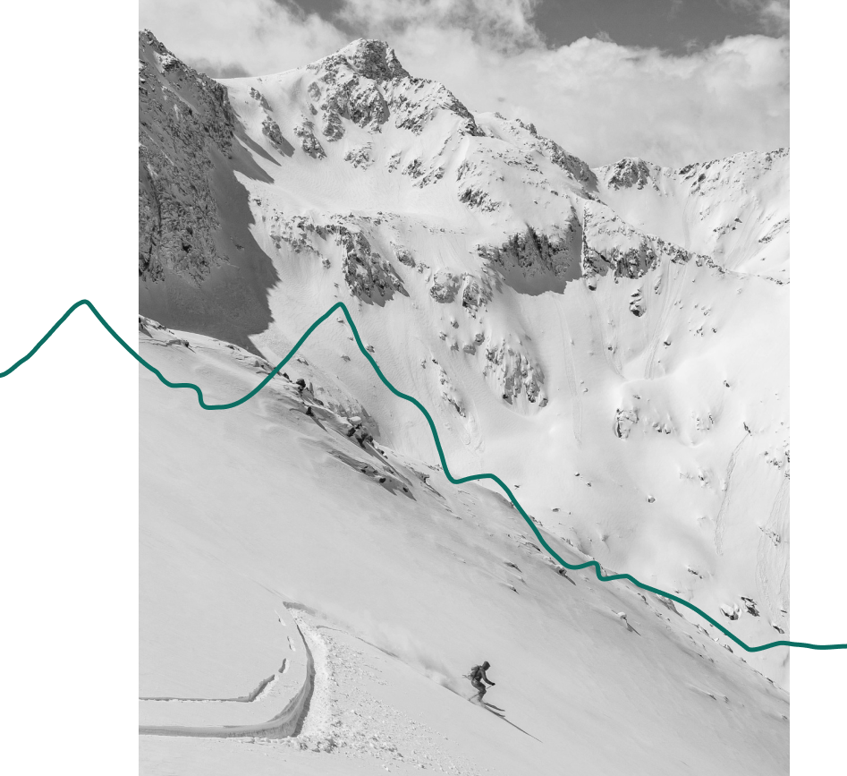
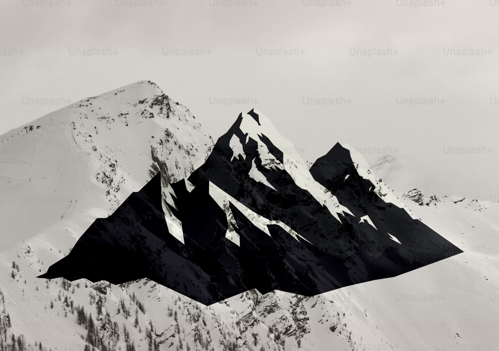

Staying safe on a ski mountain requires a combination of awareness, preparedness, and responsible decision-making. First and foremost, it's crucial to adhere to all posted signs and guidelines provided by the ski resort. Before hitting the slopes, ensure your equipment is properly fitted and in good condition. Always wear a helmet and appropriate protective gear. Maintain control of your speed and skiing or snowboarding within your abilities.
Keep an eye out for other skiers or snowboarders, yielding to those downhill and maintaining a safe distance. Be mindful of changing weather conditions and terrain variations, adjusting your technique accordingly. Additionally, familiarize yourself with the mountain's layout and potential hazards, such as cliffs, trees, or hidden obstacles. Finally, never venture off-piste alone, and consider taking avalanche safety courses if exploring backcountry terrain.
Avalanche Safety
Staying safe in avalanche terrain requires a combination of knowledge, preparation, and prudent decision-making. Before heading into avalanche-prone areas, it's crucial to check avalanche forecasts and understand the current snowpack conditions. Equipping oneself with essential avalanche safety gear such as transceivers, probes, and shovels, and knowing how to properly use them, is paramount. Traveling with a knowledgeable partner or group, practicing safe route-finding techniques, and avoiding steep slopes during times of heightened avalanche danger are essential strategies.
Understanding Avalanche Risk Levels
1. Low: Avalanches are unlikely except in isolated terrain features.
2. Moderate: Avalanches are possible on specific slopes. Evaluate terrain carefully, and practice cautious route selection.
3. Extreme: Widespread and large avalanches are certain, making travel in avalanche terrain extremely dangerous and not advisable.
4. High: Widespread avalanches are probable, even on moderate slopes. Travel in avalanche terrain is not recommended.
5. Considerable: Avalanches are likely on many steep slopes. Heightened awareness and conservative decision-making are essential.
Hypothermia
Staying safe from hypothermia is crucial, especially in cold environments or during outdoor activities in chilly weather. prevent this potentially life-threatening condition, it's essential to dress warmly in layers, covering exposed skin and wearing a hat to minimize heat loss from the head. Keeping dry is equally important; moisture can accelerate heat loss from the body. If outdoors, seek shelter from the wind and cold, and avoid overexertion, which can lead to sweating and subsequently cooling down too quickly. Stay hydrated and nourished, as proper hydration and nutrition help maintain body temperature. If someone shows signs of hypothermia such as shivering, confusion, slurred speech, or drowsiness, it's crucial to act quickly by getting them to a warm environment, removing wet clothing, and providing insulation and warmth through blankets or body heat. Seek medical attention promptly if symptoms persist or worsen. Being prepared and aware of the risks can significantly reduce the likelihood of hypothermia-related incidents.